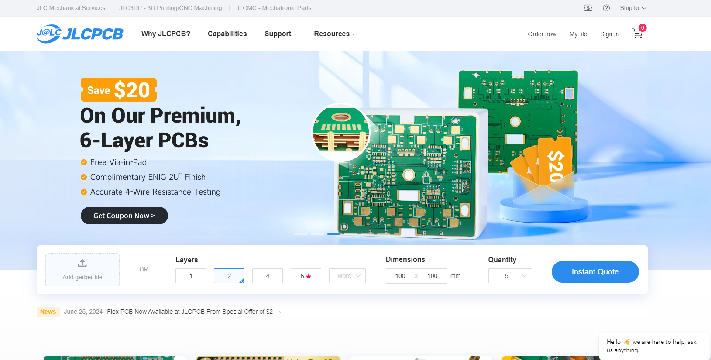
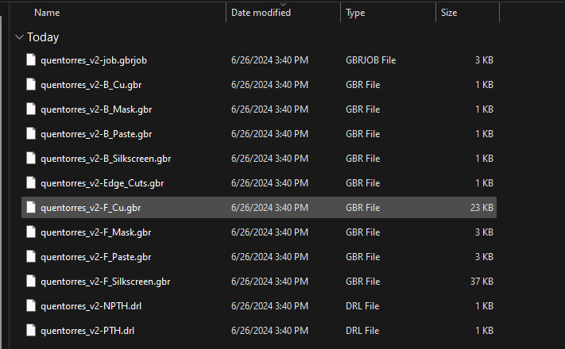
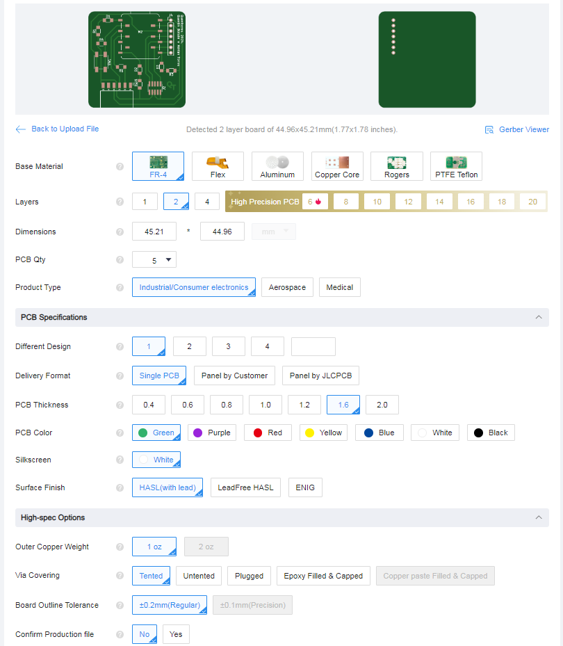
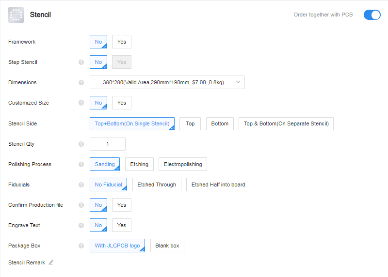
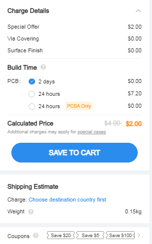
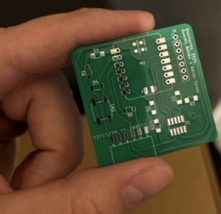
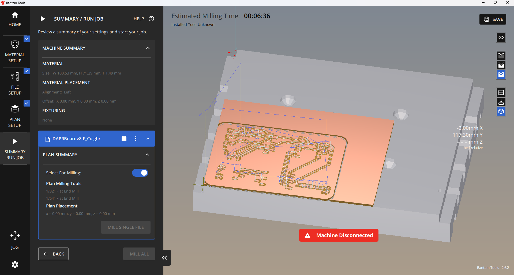
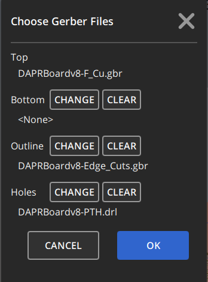

Group Assignment
Sending a PCB to mill in a mill shop
If you follow youtube there are many different PCB milling houses that you can send your designs to and get them milled for a few dollars a board. If you have the time and a well prototyped board you definiely can send your things there and have a great repeatable and much easier to solder product. But learning the milling process allows for great leaps in prototyping. Considering I had not learned how to design a board yet I used the Quentorres board supplied to us to order.
Originally I tried to upload the Quentorres to pcbway but for some reason I was having difficulty so instead I went to jlcpcb and had a much easier time of it!
Step One: Download the gerber files for your circuit. If you are in KiCAD you need to export them, but since we are using QuenTorres we just download it from the site.
The files should look something like this:
Step Two: Zip up the folder with the gerber files. JLC only accepts .zip files so just make sure to compress all into a zip and upload it onto the website.
You will then be given a ton of options!
Here I kept it all default, but I was very tempted to change the color of the board to a purple since it was closest to Moonlighter Pink.
You can even order a stencil to make your soldering easier but I opted out of that.. Probably should have purchased it.
After that you can choose a lead time, I kept it standard. But for 5 boards it would be $2. I ordered 10
After about a week or so I received my boards in the mail. The quality was much better than I expected and will definitely be ordering again.
Characterizing PCB Mill
As said below we used the Discontinued Bantam Tools PCB Mill for our PCB milling.
To upload the files onto the program you need to extract the Gerber files just from wherever you sourced them. Then you use the bantam tools PCB Milling Software that looks a little like this:
Once the program opens you have to set up the board size that you are using. I have found it is VERY important to measure out the boards exactly as there are many manufacturing differences between one and the other.
When the board settings are in you have to upload the gerber files and it is very important to pick 3 specific files to get a good board those are the: F_Cu file or the front copper. The Edge_Cuts which determines the edge of the board and the PTH file which has all the drills through the board!
For these boards we used two different end mills: the 1/64" and 1/32" flat end mills. These came out with excellent definitition even for small gaps between parts on the board.
This software is excellent because it automatically has all the settings for each of the mills you are working with. Down to the frequency of the spinning, the movelment of the bit and more. I can say however with small bits like this it is incredibly nervewracking to let it go through as they are expensive and break super easily.


Once those settings are in you can set the depth of your cuts. This is something we struggled with initially.

In this case a depth of .15 mm always worked for the boards we were working with.
.JPG)
.png)
.png)
.JPG)
.JPG)
.JPG)
.JPG)
.JPG)
.JPG)
.JPG)